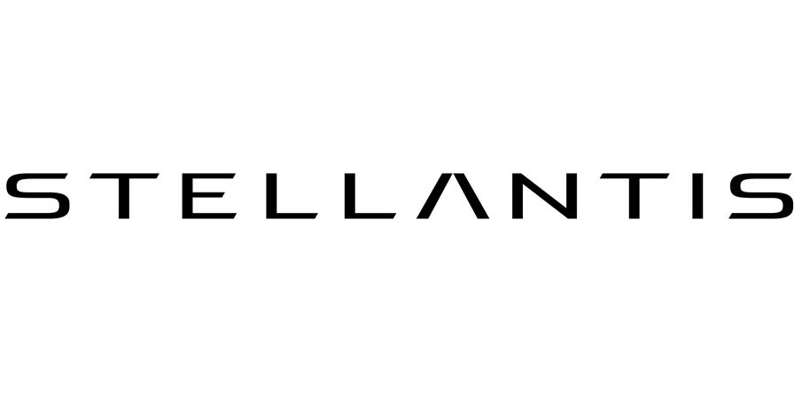

Apr - Aug 2025
Stellantis
AI & data transformation intern
Designed an internal web app for vehicle-weight benchmarking, developed an AI semantic classification model across 351 categories, and automated cross-repository component classification.
